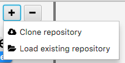

First Elegit Project¶
Create a New Repository¶
In order to use Elegit you will first need to:
- Make sure git is installed on your machine
- Have an existing git repository
- Create an account with GitHub, Bitbucket, or another similar service
Next click the plus button in the top left corner:

If you do not already have a local copy of the repository you want to work with, click “Clone repository”, otherwise click “Load existing repository”.
Once you have loaded a repository, you should see a tree structure in the middle of the screen representing the project status and history.
Adding Changes¶
As you work on your project, you will notice that Elegit will display the files you have changed in the file view on the left. Initially, they will be tagged as MODIFIED. When wish to add a file, simply click the check next to it and press the “Add” button. You should now see the tag changed to STAGED. By staging a file you are saying you are finalizing the modifications to that file and are ready to commit it.
Committing Changes¶
The commit box shows which files you have staged. Add a useful message and hit the “Commit” button. Congrats!